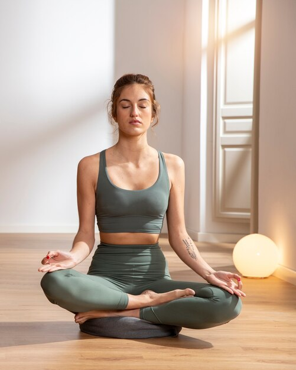

Tipos de Yoga & Cursos
Aprendizaje personalizado y adaptado a tus necesidades, es la oportunidad de profundizar en el yoga a tu propio ritmo. ¡Regístrate y comienza tu viaje hacia un bienestar integral!.
Aprendizaje personalizado y adaptado a tus necesidades, es la oportunidad de profundizar en el yoga a tu propio ritmo. ¡Regístrate y comienza tu viaje hacia un bienestar integral!.

El hatha yoga es muy adecuado como yoga para
principiantes.
El hatha1 yoga es muy adecuado como yoga para principiantes, ya que hay ejercicios para cada nivel de forma física o edad.La combinación de asanas (movimiento) y pranayama (respiración) fomenta la flexibilidad y la paciencia y, en general, ayuda a aumentar la conciencia del propio cuerpo.
Las posturas de yoga, también conocidas como asanas, son una parte fundamental de la práctica de yoga.A nivel de tu mente, el Hatha yoga puede ayudarte a reducir el estrés y la ansiedad, aliviar la tensión, conectar cuerpo y mente.
El hatha yoga es muy adecuado como yoga para
principiantes.
Hatha Beneficios2
El hatha2 yoga es muy adecuado como yoga para principiantes, ya que hay ejercicios para cada nivel de forma física o edad.La combinación de asanas (movimiento) y pranayama (respiración) fomenta la flexibilidad y la paciencia y, en general, ayuda a aumentar la conciencia del propio cuerpo.
Asana, en sánscrito, significa literalmente «asiento», pero su definición se ha ido ampliando con el tiempo y ahora abarca a todas las posturas que se realizan en la práctica con el fin de equilibrar cuerpo y mente.Practicando Hatha yoga con regularidad, verás aparecer muchos beneficios físicos y mentales en tu cuerpo.

El hatha yoga es muy adecuado como yoga para
principiantes.
Hatha posturas4
El hatha3 yoga es muy adecuado como yoga para principiantes, ya que hay ejercicios para cada nivel de forma física o edad.La combinación de asanas (movimiento) y pranayama (respiración) fomenta la flexibilidad y la paciencia y, en general, ayuda a aumentar la conciencia del propio cuerpo.
Dependiendo de su ejecución estas se pueden dividir en posturas de pie, sentadas, invertidas, torsiones, equilibrios, flexiones y extensiones.
El hatha yoga es muy adecuado como yoga para
principiantes.
Hatha salud4
El hatha4 yoga es muy adecuado como yoga para principiantes, ya que hay ejercicios para cada nivel de forma física o edad.La combinación de asanas (movimiento) y pranayama (respiración) fomenta la flexibilidad y la paciencia y, en general, ayuda a aumentar la conciencia del propio cuerpo.
El significado de las posturas de yoga proviene del sánscrito, de la palabra “asana”, que significa postura, precedida del nombre en sánscrito de cada postura en cuestión.

El hatha yoga es muy adecuado como yoga para
principiantes.
Hatha significado5
El hatha5 yoga es muy adecuado como yoga para principiantes, ya que hay ejercicios para cada nivel de forma física o edad.La combinación de asanas (movimiento) y pranayama (respiración) fomenta la flexibilidad y la paciencia y, en general, ayuda a aumentar la conciencia del propio cuerpo.
Las posturas y técnicas de respiración del Hatha yoga ayudan a mejorar su inmunidad, reducir los signos del envejecimiento, regular sus hormonas y favorecer una buena circulación sanguínea.

El hatha yoga es muy adecuado como yoga para
principiantes.
Hatha para la vida6
El hatha6 yoga es muy adecuado como yoga para principiantes, ya que hay ejercicios para cada nivel de forma física o edad.La combinación de asanas (movimiento) y pranayama (respiración) fomenta la flexibilidad y la paciencia y, en general, ayuda a aumentar la conciencia del propio cuerpo.
A nivel físico, las posturas de Hatha yoga ayudan a mantener la flexibilidad, aumentan la fuerza y mejoran el equilibrio, alivian el dolor lumbar, trabajan la alineación y pueden ayudar a reducir la tensión arterial.

El hatha yoga es muy adecuado como yoga para
principiantes.
Hatha principiantes7
El hatha yoga es muy adecuado como yoga para principiantes, ya que hay ejercicios para cada nivel de forma física o edad.La combinación de asanas (movimiento) y pranayama (respiración) fomenta la flexibilidad y la paciencia y, en general, ayuda a aumentar la conciencia del propio cuerpo.
Otra de las asanas del Hatha yoga que fomenta la relajación es la postura del niño, que es ideal para reducir la fatiga, el estrés y el cansancio.Practicando Hatha yoga con regularidad, verás aparecer muchos beneficios físicos y mentales en tu cuerpo.
El hatha yoga es muy adecuado como yoga para
principiantes.
El hatha8 yoga es muy adecuado como yoga para principiantes, ya que hay ejercicios para cada nivel de forma física o edad.La combinación de asanas (movimiento) y pranayama (respiración) fomenta la flexibilidad y la paciencia y, en general, ayuda a aumentar la conciencia del propio cuerpo.
El yoga es una disciplina completa que te permite cultivar tu cuerpo, mente y espíritu, Nunca es tarde para comenzar a recorrer el camino del yoga. Los ejercicios de respiración son tan importantes como las posturas, ya que ayudan a trabajar la respiración.